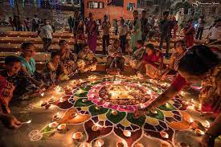
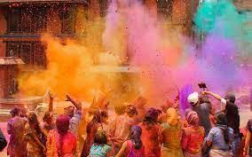

Diwali
Diwali is the five-day Festival of Lights, celebrated by millions of Hindus, Sikhs and Jains across the world. Diwali is a festival of new beginnings and the triumph of good over evil and light over darkness, and for some also coincides with harvest and new year celebrations.
Holi
Holi is a Hindu festival that celebrates spring, love, and new life. Some families hold religious ceremonies, but for many Holi is more a time for fun. It's a colourful festival, with dancing, singing and throwing of powder paint and coloured water. Holi is also known as the "festival of colours".
Navratri

Navaratri is an annual Hindu festival observed in honor of the goddess Durga, an aspect of Adi Parashakti, the supreme goddess. It spans over nine nights (and ten days), first in the month of Chaitra (March/April of the Gregorian calendar), and again in the month of Ashvin (September–October).